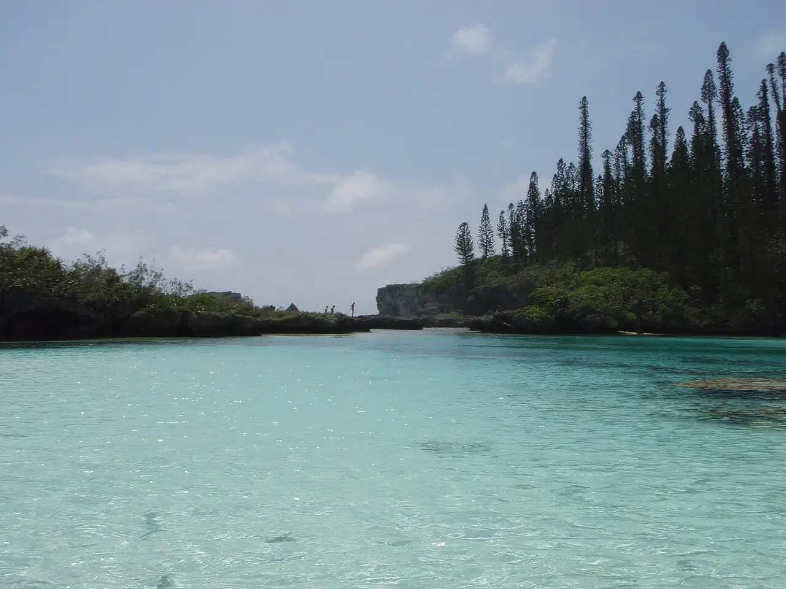

Piscine naturelle d’Oro
Île des Pins, Nouvelle-Calédonie · snorkeling, baignade

Bassin d’eau turquoise fermé par des rochers et bordé de pins colonnaires, au fond de la baie d’Oro. On y arrive en marchant dans l’eau peu profonde, puis on snorkele au milieu des poissons.
- Lieu
- Île des Pins, Nouvelle-Calédonie
- Niveau
- Débutant
- Activités
- snorkeling, baignade
- Type d'eau
- Mer / océan
- Coordonnées
- -22.58, 167.53 (position approximative du secteur)
Dangers à connaître
- Courant près de l’entrée qui communique avec l’océan.
- Coraux et rochers : ne marche pas sur les zones vivantes.
- Accès par des terres coutumières : conditions d’accès à vérifier localement.
Le conseil d'Ocean Buddy
Viens autour de la marée haute et prévois des chaussures d’eau pour la traversée à pied du chenal.
Ouvrir dans Ocean Buddy Télécharger sur l'App Store
Source : Fiche Ocean Buddy · septembre 2026 · à vérifier localement.